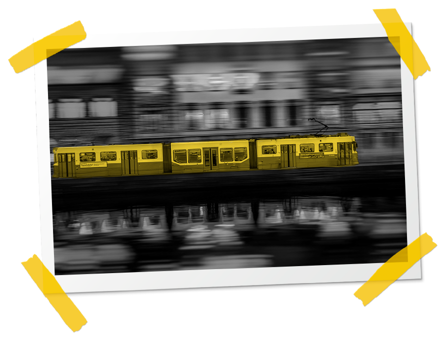

¡Te invitamos a regresar a la página principal para conocer las estrategias didácticas que podrás aplicar en tus clases!

Inicio
¡Te invitamos a regresar a la página principal para conocer las estrategias didácticas que podrás aplicar en tus clases!
Inicio
Las estrategias didácticas representan el conjunto de actividades que se proponen para concretar el método mediante el cual se comunica el conocimiento en las clases. En la educación superior los métodos empleados tienen como base la forma en la cual se construye el conocimiento en cada disciplina (inductivo, deductivo, hermenéutico, abductivo, heurístico, analítico, hipotético, problematizador, entre otros). Normalmente, el método requiere de múltiples estrategias para concretarse; a través de ellas se pueden alcanzar los objetivos propuestos y resolver los problemas planteados. Las estrategias deben enfatizar en conectar a los y las estudiantes con los problemas estudiados, y deben estimular el trabajo autónomo, el trabajo colectivo, la colaboración y la interdisciplinariedad.
Lo importante de cualquier estrategia didáctica que se proponga es que se establezca una secuencia u orden, que debe comenzar con la planeación de las actividades a desarrollar. Posteriormente, se introduce al estudiantado en el nuevo conocimiento a través de preguntas retadoras, identificación de saberes previos u otra actividad mediante la cual se le concientice sobre el nuevo conocimiento del cual debe apropiarse. Luego se le permite acceder al nuevo conocimiento a través del material y los demás recursos disponibles, y mediante las actividades que se proponen, las cuales deben incluir algún tipo de problematización o creación a partir de este nuevo conocimiento. Finalmente, se cierra con la evaluación de los aprendizajes.
Toda estrategia didáctica empleada en el ámbito universitario debe orientar de manera inmediata el aprendizaje y con ello la apropiación de unos conocimientos y el desarrollo de habilidades o competencias, pero, en esencia, lo que se busca es la creación de capacidades para actuar de manera contextualizada y en libertad.
Habilidades fundamentales o esenciales: son la base de cualquier proceso de aprendizaje. Para Foucault (2018, p. 317) “saber escuchar como corresponde; leer y escribir como corresponde; y también hablar, van a ser” las técnicas necesarias para la construcción de un discurso propio. De nuevo, de acuerdo con este autor:
Habilidades de pensamiento superior: involucran procesos mentales complejos que le permiten a los y las estudiantes resolver las problemáticas de la vida real que deberán enfrentar tanto en la vida cotidiana como en el desarrollo de su profesión. Algunas de estas habilidades son: